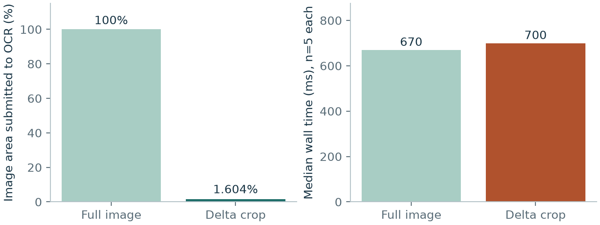
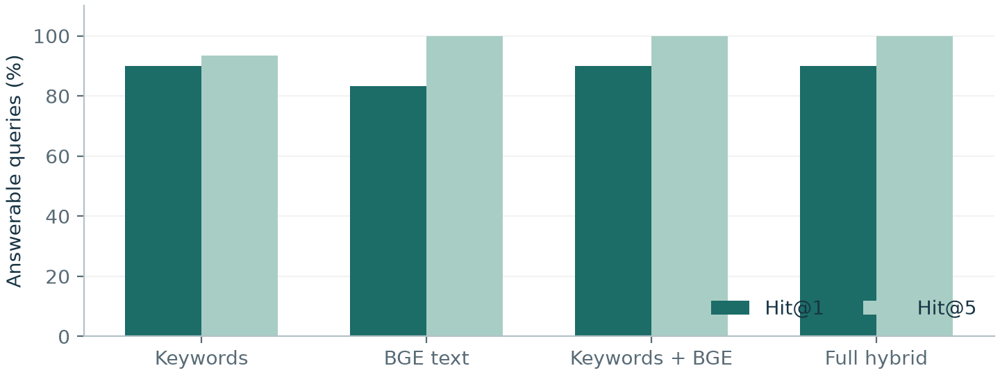
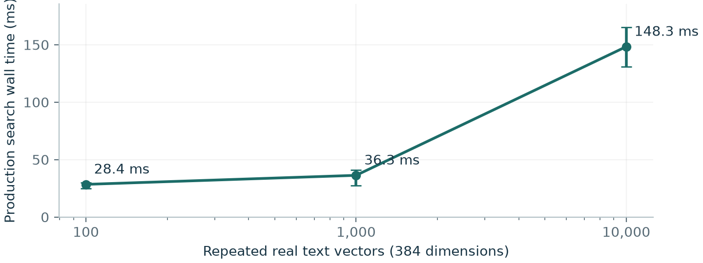

Experimental research report | 20 November 2026 | Prototype 0.1.0
A local multimodal memory: what works, what costs less, and where evidence retrieval fails
30 / 30
27 / 30
0 / 12
Expected file in top five
Expected file ranked first
Absent-answer queries with no candidates
Research question. Can this prototype retrieve personal screenshots, receipts, notes and voice memos while reducing repeated processing and vector storage, without losing important facts?
Result. On 12 synthetic files representing 11 unique assets, full hybrid retrieval achieved 100% Hit@5 and 90% Hit@1 across 30 answerable queries. It returned candidates for every one of 12 absent-answer queries. The system is effective at locating this small collection, but has no demonstrated answerability calibration.
- Exact duplicate reuse worked. Warm ingestion fell from a median 10.09s with forced eager processing to 8.73s with the current reuse policy (13.4% lower wall time; three runs each).
- Changed-region OCR preserved INR 2499 and removed INR 2999. Its 1.604% crop did not produce a measured runtime saving: isolated medians were 699.7 ms for delta and 669.9 ms for full OCR.
- INT8 corpus vector payload was 7,808 bytes versus 31,232 equivalent float32 bytes. This 75% payload reduction is much smaller than the total storage occupied by models and metadata.
- Fact extraction has consequential failures: Juniper became Jennifer in audio, an invoice digit error survived the OCR confidence gate, and one ASR segment exceeded the WAV duration.
Evidence status: all numerical results in this report were observed in this research session. The corpus and added queries are synthetic and exploratory. These are prototype measurements, not a representative accuracy study or proof of a new algorithm.
Adaptive Second Brain / Research / 02
01 System and research context
What the implementation actually does
The application is a Python-served local search system. One shared Brain engine supports the CLI and a localhost web interface. It accepts images, audio and text; PDF and video ingestion are absent. Default answers are quoted source excerpts. A local Ollama generation path exists, but no generative model was evaluated here.
Stage
Implemented mechanism
Identify and reuse
SHA-256 exact content IDs with independent file locations; near-image proposals use dHash and the latest 150 images.
Extract
RapidOCR full/delta image text; faster-whisper base on CPU INT8 for audio; 140-word text chunks with 20-word overlap.
Embed
BGE-small-en-v1.5 text vectors (384D); paired CLIP ViT-B/32 image and query encoders (512D).
Store and retrieve
SQLite metadata, FTS5 keywords and packed INT8 vectors. Dense retrieval is an exact scan after modality/date/folder filtering.
Fuse and refine
One reciprocal-rank vote per asset per channel, k=60. Rule-based OCR retry for retrieved images with mean confidence below 0.9; 5s soft budget in these probes.
Relation to prior research. RAG combines external memory with generation [1]; this project primarily evaluates retrieval and evidence presentation. CLIP provides paired image/text spaces [2], while OCR and BGE supply exact and semantic text evidence. Reciprocal rank fusion combines channel orderings without requiring score calibration [3]. Whisper supplies speech transcripts [4]. BGE's model card cautions that absolute cosine scores require task-specific interpretation [5].
Contribution under study. The engineering hypothesis is that local deduplication, changed-region processing, compact vectors and selective retries can reduce cost while preserving useful evidence. These mechanisms are existing ideas assembled in a prototype. This study establishes local observations; it does not establish algorithmic novelty or transfer the cited papers' benchmark results to this project.
The current 'adaptive' behavior is a set of fixed rules. There is no trained quality predictor, learned compute allocator, ANN index, ASR refinement controller or VLM captioning stage.
Adaptive Second Brain / Research / 03
02 Experimental method
Controls, sample sizes and measurement definitions
CPU execution provider, four configured threads. Models loaded from the existing local cache; HF offline mode enabled. No external model API.
Corpus
8 image files (7 unique), 2 text notes and 2 synthesized English WAVs. One exact duplicate and one changed-price image family. Labels remain outside inbox/.
Queries
11 original scenarios (10 answerable, 1 absent-answer) plus 31 exploratory scenarios (20 answerable, 11 absent-answer). Same corpus; no model training or held-out split.
Timing
perf_counter wall time and process CPU time. Three alternating warm ingestion runs per policy; five paired isolated OCR runs; 25 warm queries per retrieval mode; three fresh-process queries.
Integrity
Separate experiment collections; original files and the existing .secondbrain collection retained. Source/code SHA-256 hashes, file mtimes, settings and package versions recorded.
Metrics. Hit@k is the fraction of answerable queries with at least one expected unique asset among the first k results. MRR@5 averages reciprocal first-relevant rank, or zero when absent from the top five. These are file relevance metrics, not exact answer accuracy. No-answer abstention means returning zero candidates; it does not assess a generated answer. OCR field checks use case-insensitive literal substrings. Audio WER is word edit distance divided by reference words after lowercasing and punctuation removal.
Small-collection effect. Top-five retrieval is guaranteed when only two audio or text assets survive a modality filter. A uniform-random ranking under these same filters would have expected Hit@5 of approximately 83.6% over the 30 positive queries. This diagnostic explains why Hit@1 and failure inspection are essential; it is not a statistical comparison against a trained baseline.
The added queries were authored after inspecting the fixtures. Query outcomes are exploratory and correlated within asset families. Repeated timing samples measure run variability, not independent accuracy evidence. p95 is an empirical percentile of the recorded small sample.
Adaptive Second Brain / Research / 04
03 Correctness and processing cost
Experiments E1-E3: tests, eager ingestion and reuse controls
E1 - Existing regression suite. The command .venv\Scripts\python.exe -m pytest -q completed with 23 passed in 1.92s. It covers transactions, content changes, duplicate aliases, deletion/pruning, date/folder filters, delta OCR behavior, audio chunk offsets, shared API behavior and local request protections. Embeddings and selected extraction paths use test doubles; these results establish tested software behavior, not real-model accuracy.
E2 policy (n=3)
Wall median
Wall range
CPU median
Per-run actions
Eager: force every file
10.089s
9.190-10.826s
42.11s
12 indexed
Current: dedup + delta OCR
8.734s
8.505-9.190s
36.41s
11 indexed + 1 duplicate
The current policy reduced median wall time by 13.4% against this deliberately eager baseline. Both produced 11 unique assets at 12 locations, with no ingestion errors. Eager forcing reprocesses even the exact duplicate, so the contrast combines duplicate skipping and changed-region OCR. It cannot by itself attribute a gain to the crop.
E3 follow-up control (n=3)
Median wall
Observed range
Deduplication + full OCR
8.498s
8.357-8.986s
Deduplication + delta OCR
8.867s
8.655-8.914s
With exact deduplication held constant, adding delta OCR was 4.3% slower by median in this follow-up. Ranges overlap and n=3 is small. The isolated OCR experiment on the next page agrees that crop area is not a measured wall-time saving here.
Cached re-index. Five unchanged re-indexes returned 12 cached locations each, median 0.210s. Files are still hashed and SQLite events are written. This is reuse of existing extraction/embeddings, not a fresh-ingestion speedup.
Raw evidence: unit_tests.json, ingestion.json, cached_reindex.json and ingest_control.json. The full-OCR eager collection was also queried: Hit@1 and Hit@5 matched the current policy's 90% and 100%; its MRR@5 was 0.944, versus 0.950 for the current policy.
Adaptive Second Brain / Research / 05
04 Changed-region OCR
Experiment E4: area reduction did not imply a speedup

Same changed-price image; real RapidOCR, five alternating measurements per mode. Axes measure different quantities.
The original screenshot shows INR 2999; the modified screenshot shows INR 2499. Delta extraction reused five unchanged OCR lines and processed a crop covering 1.604% of the image. Across all five repetitions, the new value was present and the stale value was absent. Full OCR also preserved the correct value in every repetition.
Mode
Wall median
CPU median
OCR area
Full image
669.9 ms
2.734s
100%
Delta crop
699.7 ms
2.828s
1.604%
The crop reduced submitted pixels by 98.396%, yet median wall time increased by 4.4%. The measurement includes the changed-region logic and OCR call. Internal OCR resizing, model overhead and runtime variability are plausible explanations, but this study did not profile those components and cannot establish the cause.
One-shot stress probe
Observed strategy
Interpretation
Identical decoded pixels
Reuse; 0% OCR area
All 6 existing lines reused; no new OCR inference.
JPEG quality 85 recompression
Full OCR; 100% area
Widespread native-pixel differences defeat the crop.
15px vertical shift
Full OCR; 100% area
The shifted layout triggered the safe full-image path.
These stress probes call the extraction function directly with a known predecessor. They test its fallback behavior, not the accuracy of the dHash predecessor selector. Conclusions are limited to one synthetic image family and two transformations. Evidence: delta_ocr.json.
Adaptive Second Brain / Research / 06
05 Retrieval and channel ablations
Experiment E5: semantic channels recover misses, but fusion can hurt first rank

Thirty answerable queries. Accuracy values are from channel replay; full hybrid order was validated against all 42 actual production searches.
Channels
Hit@1
Hit@5
MRR@5
Absent: empty
FTS5 keywords
27/30
28/30
0.911
2/12
BGE only
25/30
30/30
0.908
0/12
CLIP only (all queries)
15/30
18/30
0.522
7/12
Keywords + BGE
27/30
30/30
0.944
0/12
Full hybrid
27/30
30/30
0.950
0/12
Full hybrid recovered two lexical top-five misses: 'a pale cream low top shoe' and 'portable illumination for sleeping outdoors'. Both expected files ranked second. All 10 original positives ranked first; only 17 of 20 added positives did. The third hybrid first-rank error was 'olive colored footwear', where a white shoe preceded the green shoe.
CLIP-only results are modality-limited: among the 19 image-target queries, it achieved 15/19 Hit@1 and 18/19 Hit@5. The all-query row also includes 11 text/audio targets that CLIP cannot retrieve. Adding CLIP to keywords+BGE did not change Hit@1 or Hit@5 here; MRR@5 rose only from 0.944 to 0.950. This corpus does not demonstrate a large incremental CLIP benefit.
Ablations replay the exact production candidate thresholds (BGE >=0.25, CLIP >=0.12), top-120 channel caps and asset-level RRF. Replay timings are not measurements and are excluded from latency claims. Evidence: retrieval.json, ablations.json, query_results.csv.
Adaptive Second Brain / Research / 07
06 Answerability and fact fidelity
Experiments E6-E7: a retrieved source can still lack the answer
Absent-answer retrieval. Hybrid returned candidates for all 12 negative queries, including cafe Wi-Fi, a hotel confirmation and a stove serial number that are absent from the fixtures. Keywords abstained on 2/12 and returned candidates on 10/12. These are candidate-selection failures; no generative hallucination rate was measured. The default answer function explicitly presents the results as closest excerpts to inspect.
Illustrative BGE-only cutoff
Positive candidate retention
Negative rejection
0.25
100.0%
0.0%
0.55
93.3%
33.3%
0.65
70.0%
75.0%
0.75
30.0%
91.7%
This same-set sweep only asks whether any text candidate exceeds a threshold; it does not require that candidate to be relevant and does not implement the hybrid pipeline. It illustrates the tradeoff, not a validated replacement cutoff. Raising the cutoff to 0.65 rejects 75% of negatives while retaining any candidate for only 70% of positives. No threshold was changed in production.
Exact extraction. Original-resolution image OCR passed 12/12 selected literal field checks: prices, invoice IDs, receipt totals, an error code, port and landmark names. These hand-picked fields are not full-document OCR accuracy. Audio passed 3/5 literal fields, or 4/5 after treating 'three' and '3' as equivalent. The remaining factual error is Juniper -> Jennifer.
Audio file
Raw WER
Number-normalized WER
Timestamp bound
memo_001.wav
3.2%
3.2%
Valid bounds
memo_002.wav
4.0%
0.0%
17.60s end / 12.27s WAV
Combined raw WER is 3.6% (2 edits / 56 reference words); one edit is number formatting. For memo_002.wav, the final segment ends 5.33s beyond the measured WAV duration. Its start remains within the file, but the end cannot be a valid source span. Timing alignment accuracy within valid bounds was not measured.
Label audit: the original 'meeting-owner' text scenario labels a note that names Priya as landing-page owner, not explicitly design-review owner. Its successful file retrieval does not prove the requested responsibility. The audio meeting memo states that responsibility explicitly. Evidence: extraction.json and followups.json.
151,552 bytes; includes metadata, FTS, locations and activity events
Thumbnails
62,948 bytes
Unique source media
1,336,252 bytes
Shared model cache (logical file sizes)
823,080,494 bytes (785.0 MiB)
Sampled main-process resident memory
Peak 1.39 GiB after model warmup
Symmetric quantization stores one signed byte per component and a per-vector scale. Cosine retrieval divides by the packed-vector norm, so scale cancels in this scoring path. Re-embedding the actual corpus and comparing its float32 outputs with INT8 reconstruction isolates corpus-vector storage quantization; it does not undo any quantization inside the pretrained ONNX models.
Quality diagnostic
Observed result
Minimum original/reconstructed cosine
0.999563
Absolute query-score error
Mean 0.000946; max 0.003011; n=370 vector-query pairs
Top-one channel rank agreement
93.9% (62/66 nonempty query-channel comparisons)
Mean top-five set Jaccard
0.9697; 66 comparisons
Candidate-threshold crossings
0 in the scored comparisons
Small score errors still changed four channel-level first results, so compression is not rank-identical. Final fused float32 relevance was not separately evaluated. The 75% claim applies to raw vectors only: it neither establishes a 75% reduction in the full database nor materially changes the model cache footprint at this corpus size.
RSS was sampled every 20ms during the main warmed experiment phase. It is a process working-set observation, not isolated model memory, a system peak, or a measurement of the later subprocesses/follow-ups. Model-cache bytes are logical sizes, not allocated disk blocks. Evidence: ablations.json and results.json.
Adaptive Second Brain / Research / 09
08 Latency and scale
Experiment E9: warm interactions differ sharply from process startup
Search condition
Median
Empirical p95 / n
Warm hybrid: five queries x five rounds
27.2 ms
56.7 ms; n=25
Warm keywords: same query mix
10.3 ms
17.8 ms; n=25
Fresh process: white-sneaker query
2.094s
2.773s; n=3
Same white-sneaker query, warmed
49.2 ms
n=5; existing model instances
Fresh-process search timing begins after Brain construction and includes lazy query-model initialization. Existing model files and warmed operating-system caches are retained. It is not a cold-disk or first-install download measurement. Initial per-model first inference, measured separately, took 1.41s for BGE, 0.75s for CLIP image, 0.82s for CLIP text, 2.00s for OCR and 9.33s for ASR on the first memo.

Five warmed production searches per scale; points are medians and error bars show observed minimum/maximum.
The scan stress test inserted 100, 1,000 and 10,000 independent asset rows carrying a repeated real 384D text vector. It used production SQLite scanning, filtering, fusion and result assembly, but injected a fixed query vector to remove model inference. Median search times rose from 28.4ms to 36.3ms to 148.3ms. The small-N fixed overhead means the measured curve is not proportional across all three points.
This is a compute microbenchmark, not a meaningful enlarged retrieval dataset. It has no real source files, uses repeated content, and does not establish 10,000-document accuracy, concurrent throughput, ANN comparisons or million-vector performance. Evidence: warm_latency.json, fresh_process_latency.json, warmups.json and scale.json.
Adaptive Second Brain / Research / 10
09 Selective OCR refinement
Experiment E10: the controller saved retries, but recovered no tested fields
A 400 x 480 downsample of the cafe receipt retained all three selected fields and mean OCR confidence 0.9981. Three fresh-collection queries performed no retry, as expected under the confidence gate. Follow-up probes then reduced the original 760 x 900 image to four smaller widths, with aspect ratio approximately preserved. Each setting was repeated three times and compared with unconditional 2x-upsampled OCR.
Input pixels
Mean conf.
Fields before
Retries
Accepted
Fields after
Eager 2x
260 x 308
0.998
3/3
0/3
0/3
3/3
3/3
160 x 189
0.938
2/3
0/3
0/3
2/3
2/3
100 x 118
0.864
0/3
3/3
0/3
0/3
0/3
64 x 76
No text
0/3
3/3
0/3
0/3
0/3
High-confidence factual error. At width 160, OCR read INV-2006-1042 instead of INV-2026-1042, despite mean confidence 0.938. The gate therefore made no retry. Unconditional 2x OCR also failed to recover the invoice and had lower mean confidence, so the probe does not show a recoverable field was lost specifically because of the gate. It does show that mean confidence is an inadequate detector of field errors.
Severe degradation. At width 100, confidence fell below 0.9 and all three runs attempted refinement, but confidence did not improve and none was accepted. At width 64, there was no extracted text before or after retry. Across the 12 follow-up runs there were six OCR attempts, zero accepted updates and no increase in selected-field correctness. The 260px receipt needed no retry and retained all fields.
The unconditional upsampling comparator also recovered no additional selected fields. The observed benefit of selection is avoiding unnecessary OCR calls on easy images; no accuracy benefit from the refinement transformation was demonstrated. Confidence increases and exact factual corrections require separate scoring.
The 5s limit is a soft budget, including initial retrieval. These short calls stayed within it, but no hard deadline was enforced or tested. Resolution variants are controlled synthetic stresses, not natural damaged receipts or an independent evaluation set. Evidence: refinement.json and followups.json.
Adaptive Second Brain / Research / 11
10 Interpretation and next research
Supported conclusions, validity limits and proposed work
Supported conclusions. Exact duplicate reuse and cached re-indexing functioned as intended. The current policy lowered fresh-ingestion cost against forced eager processing on this tiny corpus. INT8 vector payload compression is real and had small score errors, though it changed some ranks. Semantic retrieval recovered two lexical misses. Changed-region OCR preserved a changed amount, but delivered no measured runtime saving in these experiments.
Claims the data do not support. The work does not establish real-world accuracy, improved generative answers, multilingual transcription quality, a calibrated confidence score, a learned adaptive controller, general delta-OCR speedups, representative 10,000-file retrieval, or production concurrency/security. The absent-answer, invoice and timestamp failures should remain visible in any project presentation.
Priority
Proposed next experiment or fix
Acceptance evidence to collect
1
Validate ASR spans against decoded media duration; inspect and flag invalid boundaries.
Zero negative/out-of-range spans; evaluate timestamp alignment on manually labeled speech. Do not infer alignment from valid bounds alone.
2
Add an answerability check using independent development and test sets with hard negatives.
Report positive retrieval, negative rejection and false-answer risk together; assess questions whose keywords occur in an insufficient source.
3
Score OCR/ASR names, identifiers and amounts explicitly; compare confidence gates with field-sensitive triggers.
Exact field accuracy, retries, CPU and wall time on natural degraded receipts and real recorded names; separate numeric normalization.
4
Profile OCR internals and compare reuse policies on varied edit families.
Paired full/delta timings, crop area, text correctness, fallback rate and cumulative ingest-plus-query cost; include crop resizing and selection overhead.
5
Build an independent, larger collection and compare channel/reranker/index choices.
Family-separated splits, multiple users/devices/languages, Recall@k, Hit@1, field fidelity, first-use/warm latency, RAM, full storage and concurrency.
Validity limits. The same few assets answer many related queries; expected labels were hand-authored; the added set was created after corpus inspection; modality filters make top-five success easy; timing repetitions are few and share one machine and cached models. The scale corpus repeats vectors, field coverage is selected, and no blinded human answer review was performed. No significance claim is warranted.
Next-work rows are proposals, not completed experiments or deployed fixes. The production engine was not modified as part of this research. The main practical result is a clearer separation of file retrieval, exact evidence fidelity, answerability and processing cost.
Adaptive Second Brain / Research / 12
11 Reproducibility and references
Evidence files and how to repeat the study
Research harnesses are in research/. The recorded run is research/results/2026-11-20/. All scenario labels are outside playground/inbox/. Run from the repository root using the project virtual environment; cached models are expected under .secondbrain/models/.
Use a fresh output directory: the harness refuses to replace completed results. The main run defaults to three ingestion repetitions. If models are missing, prefetch them with brain --home .secondbrain models --audio before starting the offline experiment. Research-only dependencies include psutil, matplotlib and reportlab; observed package versions are recorded beside the evidence. Relative dates must remain consistent with fixture mtimes: regenerate the playground outside this run or use the recorded source manifest to understand date filtering.
Evidence map. manifest.json records source/code hashes and environment. ingestion.json and ingest_control.json contain per-file actions and extraction calls. retrieval.json and query_results.csv contain actual query outcomes. ablations.json includes validated channel rankings and quantization checks. delta_ocr.json, extraction.json, refinement.json and followups.json preserve quality probes. warm_latency.json, fresh_process_latency.json and scale.json preserve every timing sample. results.json, experiment_summary.csv and report_evidence.json collect summaries and derived values.
Primary references. Accessed 20 November 2026. These establish background, not this project's measured results.
The HTML and PDF are generated from the same recorded evidence by build_report.py. Experiment databases and thumbnails are disposable local artifacts; raw JSON/CSV evidence is retained. No model training was performed and no paid external inference was used.
Adaptive Second Brain / Research / 13
Appendix A1 Query outcomes
Original scenarios | actual full-hybrid search
Query
Expected file(s)
First result
First relevant rank
white sneakers
capture_001.png / capture_002.png
capture_001.png
1
white sneaker last month
capture_001.png / capture_002.png
capture_001.png
1
2499
capture_002.png
capture_002.png
1
INV-2026-1042
receipt_001.png
receipt_001.png
1
Juniper cafe flat white
receipt_001.png
receipt_001.png
1
ECONNREFUSED PostgreSQL connection failed
capture_004.png
capture_004.png
1
equipment to take camping
note_002.txt
note_002.txt
1
Who is responsible for the design review?
note_001.md
note_001.md
1
cafe near the old library
memo_001.wav
memo_001.wav
1
Friday design meeting
memo_002.wav
memo_002.wav
1
Expected file labels measure source relevance only. The exact duplicate is one asset with two file locations; it is not counted as a second retrieval vote. All expected assets were within the top five. Full IDs, aliases, channels, excerpt text and timing are available in retrieval.json.
Adaptive Second Brain / Research / 14
Appendix A2 Query outcomes
Added exploratory scenarios | actual full-hybrid search
Query
Expected file(s)
First result
First relevant rank
2999
capture_001.png
capture_001.png
1
3499
capture_003.png
capture_003.png
1
olive colored footwear
capture_003.png
capture_001.png
2
a pale cream low top shoe
capture_001.png / capture_002.png
capture_005.png
2
BOOK-7718
receipt_002.png
receipt_002.png
1
690
receipt_001.png
receipt_001.png
1
640
receipt_002.png
receipt_002.png
1
avocado toast and chocolate cake receipt
receipt_001.png
receipt_001.png
1
Design of Everyday
receipt_002.png
receipt_002.png
1
5432
capture_004.png
capture_004.png
1
database service needs to be started
capture_004.png
capture_004.png
1
Hawa Mahal Saturday
capture_005.png
capture_005.png
1
Amber Fort Sunday 10 AM
capture_005.png
capture_005.png
1
portable illumination for sleeping outdoors
note_002.txt
note_001.md
2
what should I pack to stay dry in the rain
note_002.txt
note_002.txt
1
where is the camping stove stored
note_002.txt
note_002.txt
1
who will prepare the database migration
note_001.md
note_001.md
1
what should be shipped before the review
note_001.md
note_001.md
1
flat white and avocado toast next Saturday
memo_001.wav
memo_001.wav
1
bring the new screenshots and search prototype
memo_002.wav
memo_002.wav
1
Expected file labels measure source relevance only. The exact duplicate is one asset with two file locations; it is not counted as a second retrieval vote. All expected assets were within the top five. Full IDs, aliases, channels, excerpt text and timing are available in retrieval.json.
Adaptive Second Brain / Research / 15
Appendix B Absent-answer queries
Actual full-hybrid retrieval | all expected-answer lists were empty
Query
First returned candidate
Candidates returned
my passport number on a submarine
note_001.md
2
my insurance policy identifier
note_001.md
2
who approved the production deployment
note_001.md
2
camping stove serial number
note_002.txt
2
Juniper cafe wifi password
memo_001.wav
2
phone number of the cafe near the old library
memo_001.wav
2
Monday meeting dial in code
memo_002.wav
2
Jaipur hotel reservation confirmation number
capture_005.png
5
white sneaker available size 14
capture_002.png
5
Juniper cafe refund transaction identifier
receipt_001.png
5
ISBN barcode for Design of Everyday
receipt_002.png
5
my MRI diagnosis and hospital discharge summary
capture_004.png
5
These queries ask for facts absent from the indexed evidence. Some candidate files are topically related, but none establishes the requested fact. Candidate count is capped at five; an empty list would count as retrieval abstention. A separately evaluated generation stage could still decline to answer after retrieving these files, but that behavior was not tested here.
The original no-answer scenario reproduces the limitation recorded in playground/verification.json. The added hard negatives broaden it to insufficient evidence within related topics. They remain exploratory labels created after inspection of the tiny corpus.